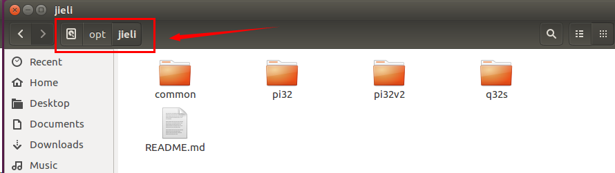
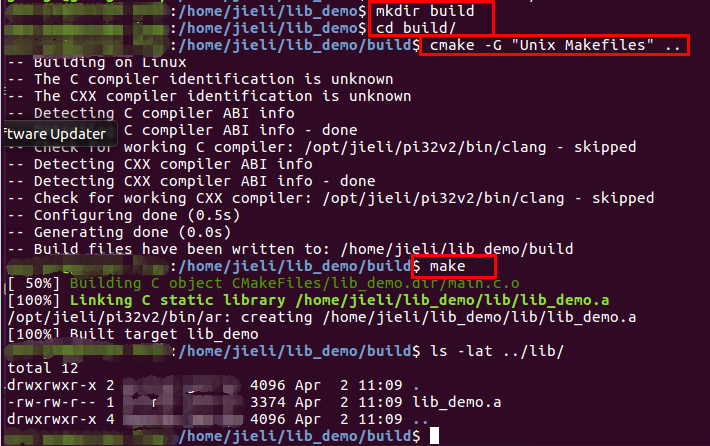

4.2. Installing the Jieli Toolchain and Building Static Libraries on Linux
4.2.1. Linux environment
The system requirements are as follows:
Description |
– |
|---|---|
CPU |
X86_64 |
Linux version |
Ubuntu 16.04 (recommended) |
Make version |
GNU Make 4.1 (recommended) |
4.2.2. Toolchain
Linux toolchain download
Linux toolchain installation
Extract jieli-linux-toolchains-*.tar.xz
Copy all the extracted directories and files to the /opt/jieli directory, as shown below:

4.2.3. Building static libraries
Static library DEMO download
Instruction set |
Applicable chip models |
Download link |
|---|---|---|
pi32v2-r3 |
700N/701N |
|
pi32v2-r3 |
AC710N |
Building the static library DEMO with make
On Linux, start a terminal, go to the demo source directory and run make, as shown below:

Building the static library DEMO with cmake
On Linux, start a terminal, go to the demo source directory and perform the following steps, as shown below:
